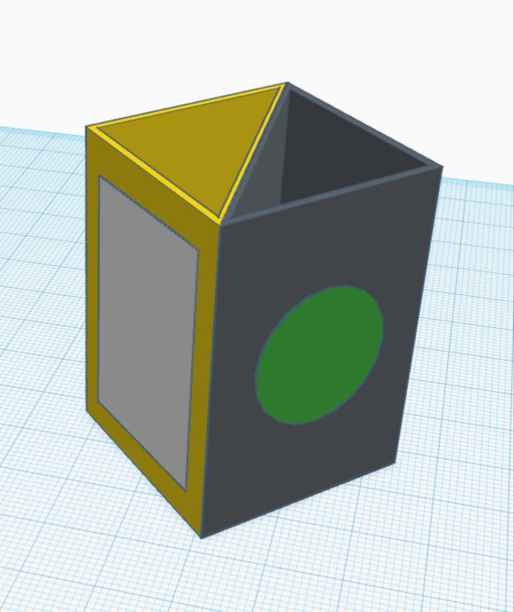
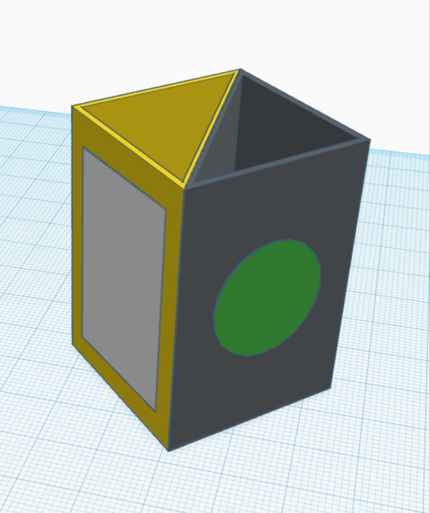

1. Quiénes Somos
Somos el equipo "+6foot". Somos un grupo de estudiantes de la escuela María Moliner, y nuestra meta es inspirar y comprometer a otras personas en una causa importante: el reciclaje de basura.
Con nosotros, puedes contribuir a hacer el mundo más limpio y verde. Esto es posible gracias a la pasión y las acciones activas de cada miembro de nuestro equipo. Creemos que los cambios comienzan con pequeños pasos, y nuestra misión es crear un mundo más limpio y saludable para todos.
Únete a nosotros, y juntos podremos marcar una gran diferencia en la preservación de nuestro planeta. Inspirémonos mutuamente para lograr cambios que perdurarán en nuestros corazones y en nuestro entorno durante mucho tiempo. Trabajemos juntos para construir un futuro en el que la naturaleza y las personas convivan en armonía. ¡Juntos, podemos lograr mucho!
Síguenos en:
 Instagram
Instagram
 TikTok
TikTok
2. A Qué Nos Dedicamos
Nos dedicamos a promover la reutilización y el reciclaje de materiales para reducir la contaminación y preservar nuestro entorno natural. Trabajamos en la creación de conciencia ambiental y en la organización de actividades y proyectos relacionados con la gestión de residuos.
Además, organizamos actividades como una visita a la planta de reciclaje de Segovia "Las Huertas".
3. Nuestros Proyectos
Estamos involucrados en varios proyectos de reciclaje y reutilización de materiales, incluyendo campañas de limpieza, talleres educativos y la creación de puntos de recolección de materiales reciclables en nuestra comunidad. ¡Únete a nosotros y ayúdanos a hacer del mundo un lugar más limpio y sostenible!
 
